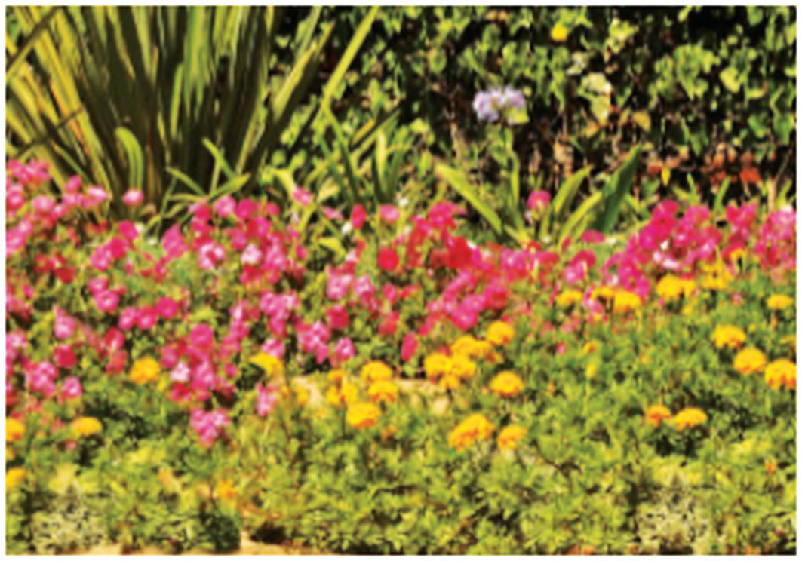

when blue and green light enter the eye, a cyan light is seen.
Appearance of objects under white light
When one looks at an object, the object is seen when it reflects light into the eye of the observer. Objects may absorb certain colours of the light falling on them and reflect other colours. Therefore, the colour appearance of objects depends on the colour of the light that the object reflects or absorbs and the colour of the light falling on the object. The selective absorption or reflection of light by an object gives the object its characteristic colour as perceived by an observer.
Coloured objects under white light
When white light falls on an object, and the object reflects the entire colour spectrum in the light, the object appears white. Conversely, the object appears black if it absorbs all colours of the white light falling on it. If the object reflects some of the colours and absorbs the others, the object appears coloured. For example, some flowers in Figure 5.21 appear yellow because they absorb all other colours except the yellow colour, which is reflected into the observer’s eyes. Other flowers also absorb all the colours of white light except their respective colours, as seen in the Figure 5.21.

White objects under coloured light
An object is seen as white because it reflects all colours of the white light falling on it. Therefore, when a white object is viewed under the coloured light, it will reflect the coloured light and hence appear to have the colour of the light. For example, when a white object is viewed under the blue light, it appears as a blue object. Similarly, an object will appear red or green when viewed under red or green light, respectively.

Procedure
1. Take filters of different colours (red, yellow, green and blue).
2. Let the light fall on the white object through each colour filter.